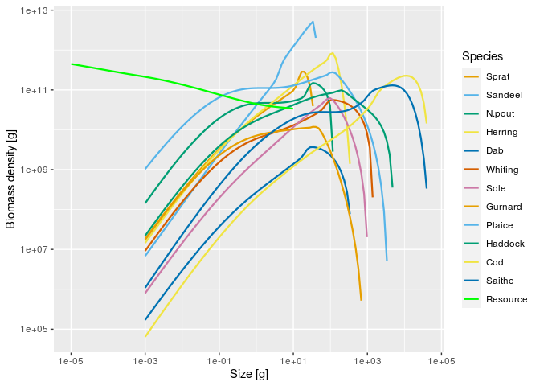
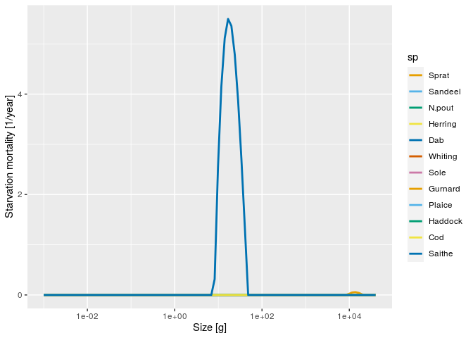
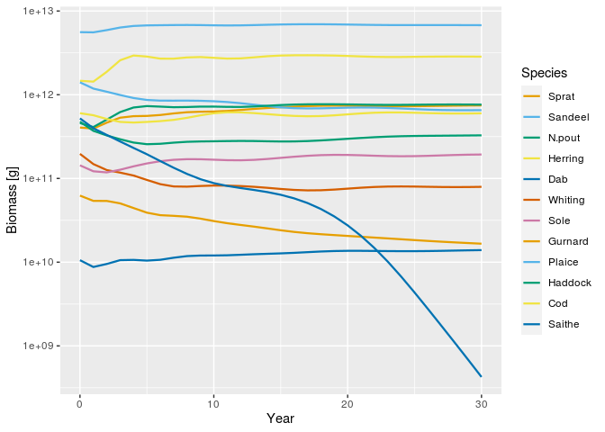

This is an extension package for the mizer package (https://sizespectrum.org/mizer/) to implement starvation mortality.
You can install the development version of mizerStarvation from GitHub with
remotes::install_github("sizespectrum/mizerStarvation")
This is an artificial example just to illustrate usage. We start with the North Sea model that comes with the mizer package.
library(mizerStarvation) library(tidyverse) library(ggplot2) params <- NS_params plotSpectra(params, power = 2)

We add starvation mortality
params <- setStarvation(NS_params, 10)
We decrease resource availability to create some starvation
capacity <- getResourceCapacity(params) capacity[w_full(params) > 0.1] <- 0 params <- setResource(params, resource_capacity = capacity) initialNResource(params)[w_full(params) > 0.1] <- 0
We can calculate the starvation mortality for each species as a function of size with getStarvMort():
starv_mort <- getStarvMort(params)
This returns a matrix. For plotting we turn this into a data frame with melt() and send it to ggplot:
ggplot(melt(starv_mort)) + geom_line(aes(x = w, y = value, colour = sp, linetype = sp), size = 1) + scale_x_log10() + xlab("Size [g]") + ylab("Starvation mortality [1/year]") + scale_colour_manual(values = params@linecolour) + scale_linetype_manual(values = params@linetype)

Of course now Saithe will go extinct, not only because of the starvation mortality but also because it stops growing before maturity.
sim <- project(params, t_max = 30) plotBiomass(sim)
